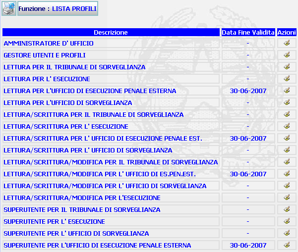

GENERALITA'
LISTA PROFILI: La funzione, consente di visualizzare e modificare i profili utente già esistenti nel sistema.
LE MASCHERE VIDEO
La funzione in esame viene realizzata attraverso l'utilizzo della seguente maschera che riporta gli elementi descrittivi e operativi dei profili utente.

COME FARE PER ...
| Per modificare i dati inseriti relativi al profilo utente, l'amministratore deve: |
Cliccare sul pulsante
in corrispondenza del profilo che si vuole modificare; si aprirà la maschera modifica profilo che permette di effettuare le modifiche volute.
PULSANTI
Oltre al pulsante
 , è presente il pulsante
e fanno entrambi parte del gruppo di
pulsanti di "Uso Comune".
, è presente il pulsante
e fanno entrambi parte del gruppo di
pulsanti di "Uso Comune".